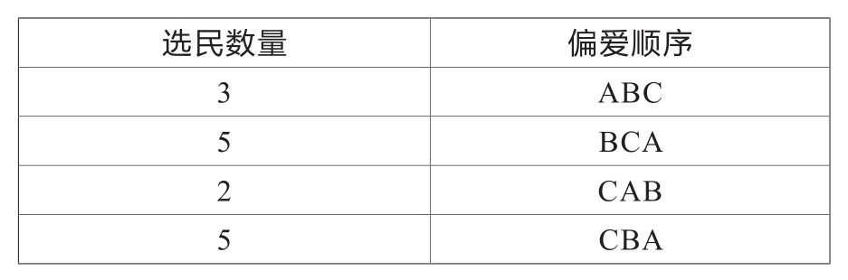
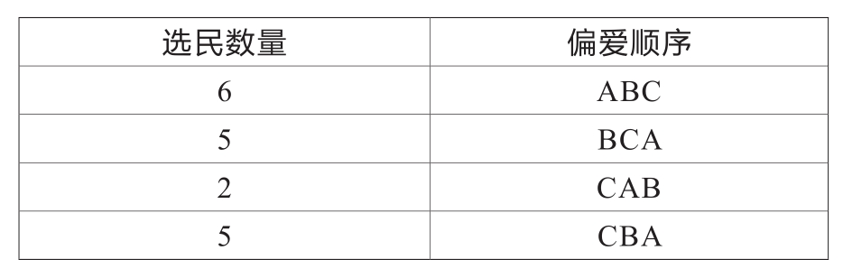

无论是举手投票表决班长人选还是投纸质选票选择国家总统，全世界的人每天都会面对无数个选择。这时我便不禁发问：如何选举才能更公平呢？
选举首先要保证有不同利益偏好的集体的利益均衡，但是现实的选举中有很多不公平的情况，比如“少数服从多数”这种论断。我们假设以下场景：三位候选人A、B、C进行选举。选民共有15人，其中有3人比起B来更喜欢A，比起C来更喜欢B。我们把这种排列顺序写成ABC，在下表中的第一行显示，其他选民对三位候选人的偏爱顺序也以此列出。

选举根据简单多数制原则分两轮进行：初轮选举与最终选举——术语是这样讲的。这一选举制度被广泛地应用于法国的总统选举与大多数德国联邦州的市长选举中。
每个选民只为一位候选人投票，在第一轮选举中得票最少的候选人被自动淘汰出局。紧接着剩下的候选人进行第二轮最终选举。在第一轮选举中A、B、C三人分别得到了3票、5票、2+5=7票。因此，A被淘汰出局。在第二轮选举中，原来的偏爱顺序为ABC的人将为B投票，因为B是A退出选举后在他们的偏爱顺序中排名第一的人。那么，这一轮选举中B得票3+5=8，C得票2+5=7，B最终获得选举的胜利。
如果这时候A有外援的话，相信A一定会非常愉快的。假如选A的选民都有一个“双胞胎兄弟／姐妹”，他们都会投票给A，并且偏爱顺序仍然是ABC，那是不是就会对最终的选举结果有很大影响呢？[书ji分 享V 信jnztxy]
结果其实并不尽然。我们猜想这三位选择A的选民都有双胞胎兄弟／姐妹，也就是说此时偏爱排序为ABC的人变成了6个，选民总数从15个增长到了18个。那么，此时选民数量与偏爱顺序如下表：

这个时候会发生什么呢？在第一轮竞选中A、B、C三人得到的总票数分别为6票、5票、2+5=7票。此时B出局。最终选举中A得6票，C得5+2+5=12票，最终的赢家为C。
A因为增加的三位外援（这些双胞胎把A放在第一位、C放在最后一位）让自己在第一轮选举中的票数翻倍，但这却意外地促成了C当选，尽管在A的选民中C当选是个最差的结果。这就是选举体系理论中的双胞胎悖论（Twin Paradox）——附加的选票可能会帮助最不被看好的对手夺得胜利。
这只是在选举中出现的一个备受争议的悖论，将来的某一天我还会重回这个主题，研究其他有关选举的悖论。我相信，大家现在对于选举制度应该有了一个不同于以前的看法——在理想情况下，绝对民主究竟可能吗？